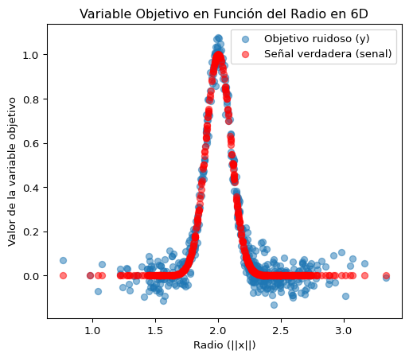
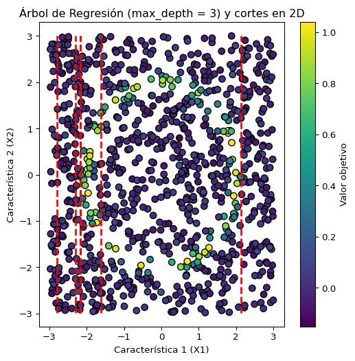
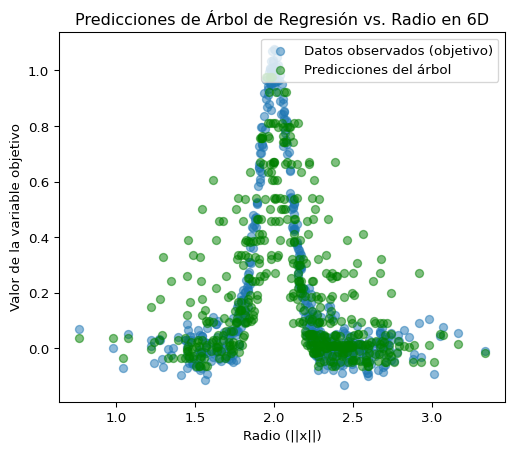
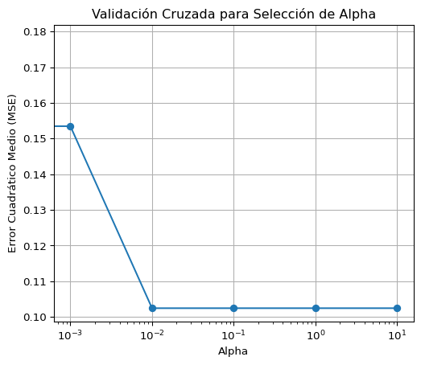
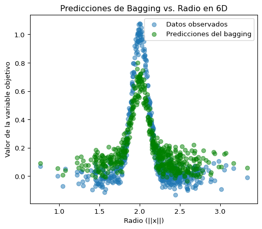
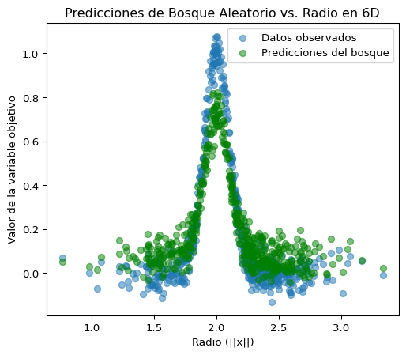
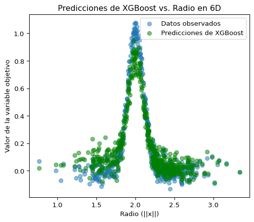

Ahora estamos listos para estudiar algunos de los algoritmos más sofisticados. Empezaremos por un par que son sorprendentemente podersosos cuando la cantidad de datos es limitada y estos tienen una estructura bien definida (por ejemplo tenemos una tabla de datos). Estos son los bosques aleatorios y el boosting.
Pero antes, debemos empezar por un método bastante sencillo (y muy interpretable).
Trabajaremos con el siguiente ejemplo artificial
Código
import numpy as npimport matplotlib.pyplot as plt# Fijar la semilla de aleatoriedad para reproducibilidadnp.random.seed(42)# ---- Parámetros ----N =500# Número de puntos de datosd =6# Dimensionalidad del espacio de entrada# Parámetros de la señal:sigma_senal =0.1# Controla la agudeza del pico alrededor de radio = 2# Parámetros del ruido:sigma_ruido =0.05# Amplitud del ruido (ruido blanco)# ---- Generar el conjunto de datos ----# 1. Generar N puntos distribuidos uniformemente en el hiper-cubo [-1.5, 1.5]^6.datos = np.random.uniform(-1.5, 1.5, size=(N, d))# 2. Calcular la norma euclidiana (radio) para cada punto.radio = np.linalg.norm(datos, axis=1)# 3. Calcular la señal base como una función gaussiana del radio.# Esta función tiene un máximo (valor 1) cuando radio = 2.senal = np.exp(-((radio -2)**2) / (2* sigma_senal**2))# 4. Generar ruido gaussiano no correlacionado (ruido blanco).ruido = np.random.normal(loc=0, scale=sigma_ruido, size=N)# 5. Definir la variable objetivo (target) sumando la señal y el ruido.objetivo = senal + ruido # ---- Visualización ----# Puesto que la función subyacente depende solo del radio, se grafica la variable objetivo y la señal verdadera en función del radio.plt.figure(figsize=(6, 5))plt.scatter(radio, objetivo, alpha=0.5, label='Objetivo ruidoso (y)')plt.scatter(radio, senal, alpha=0.5, label='Señal verdadera (senal)', color='red')plt.xlabel("Radio (||x||)")plt.ylabel("Valor de la variable objetivo")plt.title("Variable Objetivo en Función del Radio en 6D")plt.legend()plt.show()# ---- Salida Resumida ----print("Dimensiones del conjunto de datos:")print("Forma de datos:", datos.shape)print("Forma de objetivo:", objetivo.shape)

Dimensiones del conjunto de datos:
Forma de datos: (500, 6)
Forma de objetivo: (500,)
Generamos datos en una hiperesfera de seis dimensiones. Los datos verdaderos dependen sólo del radio de la hiperesfera, pero tenemos los valores de cada una de las seis variables. Este es un caso muy no-lineal, por lo que no es fácil de aproximar con un modelo lineal como la mayoría de los vistos hasta ahora.
Árboles de Decisión
Los árboles de decisión consisten en hacer una regresión o una clasificación basada en una serie de decisiones.
Cada decisión consiste en mirar una variable. Si el valor de la variable es mayor que un valor de corte nos vamos por una rama, si es menor nos vamos por otra rama. Vemos un ejemplo en la Figura 1.
Figura 1: Ejemplo de árbol de decisión para predecir el salario de un jugador de baseball. Tomado del libro.
A cada decisión la llamamos un nodo, y a cada punto final lo llamamos una hoja.
Código
import numpy as npimport matplotlib.pyplot as pltfrom sklearn.tree import DecisionTreeRegressor, _tree# ==============================# Generación del conjunto de datos 2D (caso independiente)# ==============================np.random.seed(42)N2d =1000# Número de puntos en 2D# Generar puntos en 2D distribuidos uniformemente en el cuadrado [-3, 3] x [-3, 3]datos_2d = np.random.uniform(-3, 3, size=(N2d, 2))# Calcular el radio (distancia al origen) para cada puntoradio_2d = np.linalg.norm(datos_2d, axis=1)# Parámetros para la señalsigma_senal_2d =0.1# Controla la agudeza del pico en radio = 2# Definir la señal como una función gaussiana con pico en radio = 2senal_2d = np.exp(-((radio_2d -2)**2) / (2* sigma_senal_2d**2))# Generar ruido gaussiano independiente (ruido blanco)sigma_ruido_2d =0.05ruido_2d = np.random.normal(loc=0, scale=sigma_ruido_2d, size=N2d)# Variable objetivo: suma de la señal y el ruidoobjetivo_2d = senal_2d + ruido_2d# ==============================# Entrenamiento del Árbol de Regresión poco profundo para 2D# ==============================# Se entrena un árbol de regresión con profundidad máxima de 3arbol_2d = DecisionTreeRegressor(max_depth=3, random_state=42)arbol_2d.fit(datos_2d, objetivo_2d)# ==============================# Función para graficar los cortes del árbol en 2D# ==============================def graficar_divisiones_2d(nodo, x_min, x_max, y_min, y_max, arbol):""" Función recursiva para graficar las líneas de división del árbol. Recibe el índice del nodo y los límites actuales de la región, junto con el árbol entrenado. """# Verificar si el nodo actual no es una hojaif arbol.tree_.feature[nodo] != _tree.TREE_UNDEFINED:# Obtener la característica de división y el umbral feature = arbol.tree_.feature[nodo] umbral = arbol.tree_.threshold[nodo]if feature ==0:# División vertical: se divide la característica 0 (eje X) plt.plot([umbral, umbral], [y_min, y_max], color='red', linestyle='--', linewidth=2)# Llamadas recursivas para los subnodos: graficar_divisiones_2d(arbol.tree_.children_left[nodo], x_min, umbral, y_min, y_max, arbol) graficar_divisiones_2d(arbol.tree_.children_right[nodo], umbral, x_max, y_min, y_max, arbol)elif feature ==1:# División horizontal: se divide la característica 1 (eje Y) plt.plot([x_min, x_max], [umbral, umbral], color='red', linestyle='--', linewidth=2)# Llamadas recursivas para los subnodos: graficar_divisiones_2d(arbol.tree_.children_left[nodo], x_min, x_max, y_min, umbral, arbol) graficar_divisiones_2d(arbol.tree_.children_right[nodo], x_min, x_max, umbral, y_max, arbol)# Definir los límites iniciales de la región según los datos 2Dx_min_2d, x_max_2d = datos_2d[:, 0].min(), datos_2d[:, 0].max()y_min_2d, y_max_2d = datos_2d[:, 1].min(), datos_2d[:, 1].max()# ==============================# Visualización de los datos y las divisiones# ==============================plt.figure(figsize=(6, 6))# Graficar los puntos con un color que depende del valor objetivoscatter = plt.scatter(datos_2d[:, 0], datos_2d[:, 1], c=objetivo_2d, cmap='viridis', edgecolor='k', s=50)plt.colorbar(scatter, label="Valor objetivo")# Graficar los cortes del árbol (divisiones) usando la función recursivagraficar_divisiones_2d(0, x_min_2d, x_max_2d, y_min_2d, y_max_2d, arbol_2d)plt.xlabel("Característica 1 (X1)")plt.ylabel("Característica 2 (X2)")plt.title("Árbol de Regresión (max_depth = 3) y cortes en 2D")plt.show()

Para calcular el error cometido por el árbol, todo depende de si es un problema de regresión o de clasificación. Para regresión podemos usar simplemente el error cuadrático medio entre la predicción y los datos. El caso de clasificación lo discutimos más abajo.
Código
from sklearn.tree import DecisionTreeRegressorfrom sklearn.metrics import mean_squared_error# ==============================# Entrenamiento del Árbol de Regresión# ==============================# Crear y entrenar el árbol de regresión.# El parámetro min_samples_leaf=4 fuerza al árbol a profundizar hasta que cada hoja# contenga al menos 4 puntos.arbol_regresion = DecisionTreeRegressor(min_samples_leaf=4, random_state=42)arbol_regresion.fit(datos, objetivo)# Realizar predicciones en el conjunto de entrenamiento.predicciones = arbol_regresion.predict(datos)# Calcular el desempeño del árbol en el conjunto de entrenamiento (coeficiente de determinación R^2).score = arbol_regresion.score(datos, objetivo) # Obtener información sobre el árbol: número de hojas y profundidad máximan_hojas = arbol_regresion.get_n_leaves()profundidad = arbol_regresion.get_depth()print("Desempeño del árbol (R^2):", score)print("Número de hojas:", n_hojas)print("Profundidad del árbol:", profundidad)mse = mean_squared_error(objetivo, predicciones)print("Error cuadrático medio (MSE):", mse)# ==============================# Visualización# ==============================# Para visualizar, aprovechamos que la función subyacente depende del radio.# Se grafican tanto los datos observados (objetivo con ruido) como las predicciones del árbol.plt.figure(figsize=(6, 5))plt.scatter(radio, objetivo, alpha=0.5, label='Datos observados (objetivo)')plt.scatter(radio, predicciones, alpha=0.5, label='Predicciones del árbol', color='green')plt.xlabel("Radio (||x||)")plt.ylabel("Valor de la variable objetivo")plt.title("Predicciones de Árbol de Regresión vs. Radio en 6D")plt.legend()plt.show()
Desempeño del árbol (R^2): 0.6368963848809426
Número de hojas: 101
Profundidad del árbol: 16
Error cuadrático medio (MSE): 0.03703362614401399

Para entrenar un árbol, sería computacionalmente demasiado costoso intentar todas las posibles combinaciones de todos los posibles cortes en todas las variables. Lo que se hace es agregar un nodo a la vez. Se comparan todos los posibles cortes a cada paso y se toma el que reduce más el error.
El número total de nodos es un hiperparámetro. Sin embargo, podemos usar regularización en vez de escogerlo. Es decir, intentamos minimizar \[
\mathcal{L} = \sum_i (y_i - \hat{y}_i)^2 + \alpha T\,,
\]
donde \(T\) es el número de hojas en el árbol. El hiperpárametro \(\alpha\) corresponde al costo de agregarle más complejidad al árbol. Su valor se puede escoger usando validación cruzada:
Crecemos un árbol muy grande. Hasta que cada hoja tenga pocos puntos de datos.
Calculamos la función de pérdida como función de \(\alpha\), cortando hojas para obtener el mejor subárbol para cada valord e \(\alpha\).
Usamos validación cruzada, repitiendo los pasos 1 y 2 en cada pliegue. El menor error nos da el mejor valor de \(\alpha\).
Se escoge el subárbol correspondiente a ese valor de \(\alpha\) que se había guardado en el paso 2.
Código
from sklearn.model_selection import KFold, cross_val_score# ==============================# Validación Cruzada para Árboles de Regresión# ==============================# Definir los valores de alpha a probaralphas = [0, 0.001, 0.01, 0.1, 1, 10]# Crear el objeto KFold para validación cruzadakf = KFold(n_splits=5, shuffle=True, random_state=42)# Lista para almacenar los scores de validación cruzadacv_scores = []# Realizar validación cruzada para cada valor de alphafor alpha in alphas:# Crear y entrenar el árbol con el valor actual de alpha arbol = DecisionTreeRegressor(ccp_alpha=alpha, random_state=42) scores = cross_val_score(arbol, datos, objetivo, cv=kf, scoring='neg_mean_squared_error') cv_scores.append(-scores.mean()) # Convertir a MSE positivo# Encontrar el mejor valor de alphamejor_alpha = alphas[np.argmin(cv_scores)]print("Mejor valor de alpha:", mejor_alpha)# Graficar los resultadosplt.figure(figsize=(6, 5))plt.plot(alphas, cv_scores, 'o-')plt.xscale('log')plt.xlabel('Alpha')plt.ylabel('Error Cuadrático Medio (MSE)')plt.title('Validación Cruzada para Selección de Alpha')plt.grid(True)plt.show()# Entrenar el árbol final con el mejor alphaarbol_final = DecisionTreeRegressor(ccp_alpha=mejor_alpha, random_state=42)arbol_final.fit(datos, objetivo)# Evaluar el árbol finalpredicciones_final = arbol_final.predict(datos)mse_final = mean_squared_error(objetivo, predicciones_final)print("MSE del árbol final:", mse_final)
Mejor valor de alpha: 0.01

MSE del árbol final: 0.10199189598228345
Árboles de Clasificación
Los árboles también se pueden usar para clasificación. En este caso, en lugar de minimizar el error cuadrático medio, se busca minimizar una medida de impureza como la entropía:
donde \(p_{ik}\) es la proporción de observaciones de la clase \(k\) en el nodo \(i\). La entropía mide la incertidumbre en la clasificación: es máxima cuando todas las clases son igualmente probables y es cero cuando la probabilidad de una clase es 1 y las otras son cero para cada observación. Es decir, es cero cuando cada clase es “pura” en el sentido de que todos los puntos en el nodo pertenecen a la misma clase.
Al dividir un nodo, se busca la característica y el punto de corte que maximicen la reducción en la entropía. Esta reducción se conoce como ganancia de información:
donde \(N\) es el número total de observaciones en el nodo, y \(N_{\text{izq}}\) y \(N_{\text{der}}\) son los números de observaciones en los nodos hijos izquierdo y derecho respectivamente.
Métodos de Ensamble
Los métodos de ensamble combinan múltiples árboles para mejorar el rendimiento. La idea principal es que cada árbol es débil por sí solo, pero combinados dan un resultado mucho mejor.
Bagging y Bosques Aleatorios
Los árboles de decisión tienen una alta varianza. Es decir, un árbol de decisión entrenado con un conjunto de datos puede dar resultados muy diferentes si se entrena con otro conjunto de datos. Una forma de reducir la varianza en general es promediar sobre muchas realizaciones entrenadas sobre múltiples conjuntos de datos. Sin embargo, no tenemos múltiples conjuntos de datos. Por esto podemos usar muestreo con reemplazo para obtener múltiples conjuntos de datos. Es decir, procedemos de la siguiente manera:
Tomamos un subconjunto aleatorio con reemplazo de los datos de tamaño \(N\).
Entrenamos un árbol de decisión con ese subconjunto.
Repetimos el proceso \(B\) veces.
Obtenemos \(B\) árboles de decisión.
La predicción final es el promedio de las predicciones de los \(B\) árboles.
A esto se le llama bagging (Bootstrap Aggregating).
Código
from sklearn.ensemble import BaggingRegressorfrom sklearn.tree import DecisionTreeRegressor# Crear el estimador base (árbol de decisión)arbol_base = DecisionTreeRegressor(max_depth=3, random_state=42)# Crear el modelo de baggingbagging = BaggingRegressor( n_estimators=100, # Número de árboles max_samples=0.8, # Fracción de datos a usar en cada árbol random_state=42)# Entrenar el modelobagging.fit(datos, objetivo)# Realizar prediccionespredicciones_bagging = bagging.predict(datos)# Evaluar el rendimientomse_bagging = mean_squared_error(objetivo, predicciones_bagging)print("MSE del bagging:", mse_bagging)# Visualizar las prediccionesplt.figure(figsize=(6, 5))plt.scatter(radio, objetivo, alpha=0.5, label='Datos observados')plt.scatter(radio, predicciones_bagging, alpha=0.5, label='Predicciones del bagging', color='green')plt.xlabel("Radio (||x||)")plt.ylabel("Valor de la variable objetivo")plt.title("Predicciones de Bagging vs. Radio en 6D")plt.legend()plt.show()
MSE del bagging: 0.020796358419776385

Aunque esto reduce la varianza, los árboles de decisión tienen todavía una alta correlación entre ellos. Es decir, si un árbol predice que un punto es de una clase, los otros árboles tenderán a predecir lo mismo. Para reducir esta correlación, podemos introducir una fuente adicional de aleatoriedad. La idea es permitir que cada árbol pueda usar un subconjunto de características para hacer las divisiones.
Bosques Aleatorios
Los bosques aleatorios son una modificación del bagging que introduce una fuente adicional de aleatoriedad. La idea principal es:
Entrenar múltiples árboles de decisión
Cada árbol se entrena con un subconjunto aleatorio de los datos (muestreo con reemplazo)
En cada nodo, solo se considera un SUBCONJUNTO ALEATORIO de las características (típicamente \(\sqrt{p}\) características en clasificación o \(p/3\) en regresión, donde \(p\) es el número total de características)
La predicción final es el promedio (regresión) o la mayoría de votos (clasificación) de todos los árboles
La diferencia clave con el bagging es la restricción en las características disponibles en cada nodo. Esta restricción reduce la correlación entre los árboles del ensamble, lo que típicamente resulta en un mejor rendimiento que el bagging simple. En bagging, si hay características muy predictivas, todos los árboles tenderán a usar esas mismas características, lo que aumenta la correlación entre ellos. Al restringir aleatoriamente las características disponibles en cada nodo, los bosques aleatorios evitan este problema y producen árboles más diversos y menos correlacionados.
Código
from sklearn.ensemble import RandomForestRegressor# Crear y entrenar el bosque aleatoriobosque = RandomForestRegressor(n_estimators=100, max_features='sqrt', random_state=42)bosque.fit(datos, objetivo)# Realizar prediccionespredicciones_bosque = bosque.predict(datos)# Evaluar el rendimientomse_bosque = mean_squared_error(objetivo, predicciones_bosque)print("MSE del bosque aleatorio:", mse_bosque)# Visualizar las prediccionesplt.figure(figsize=(6, 5))plt.scatter(radio, objetivo, alpha=0.5, label='Datos observados')plt.scatter(radio, predicciones_bosque, alpha=0.5, label='Predicciones del bosque', color='green')plt.xlabel("Radio (||x||)")plt.ylabel("Valor de la variable objetivo")plt.title("Predicciones de Bosque Aleatorio vs. Radio en 6D")plt.legend()plt.show()
MSE del bosque aleatorio: 0.01404837750553461

Boosting
El boosting es otra técnica de ensamblaje que construye modelos secuencialmente, donde cada nuevo modelo intenta corregir los errores del anterior. El algoritmo más popular es Gradient Boosting:
Inicializar con una predicción constante (por ejemplo, el promedio de los valores objetivo)
Para cada iteración:
Calcular los residuos (diferencia entre predicción actual y valores reales)
Entrenar un nuevo árbol para predecir los residuos
Actualizar las predicciones sumando una fracción de la predicción del nuevo árbol
La predicción final es la suma de todas las predicciones de los árboles
Código
import xgboost as xgb# Crear y entrenar el modelo XGBoostxgb_model = xgb.XGBRegressor( n_estimators=2000, learning_rate=0.005, max_depth=6, random_state=42, objective='reg:squarederror')xgb_model.fit(datos, objetivo)# Realizar prediccionespredicciones_xgb = xgb_model.predict(datos)# Evaluar el rendimientomse_xgb = mean_squared_error(objetivo, predicciones_xgb)print("MSE de boosted trees:", mse_xgb)# Visualizar las prediccionesplt.figure(figsize=(6, 5))plt.scatter(radio, objetivo, alpha=0.5, label='Datos observados')plt.scatter(radio, predicciones_xgb, alpha=0.5, label='Predicciones de XGBoost', color='green')plt.xlabel("Radio (||x||)")plt.ylabel("Valor de la variable objetivo")plt.title("Predicciones de XGBoost vs. Radio en 6D")plt.legend()plt.show()
MSE de boosted trees: 0.007198678032281405

En este caso yo escogí unos hiperparámetros que dan un error pequeño sobre el conjunto de entrenamiento. En general, esto no es lo que se hace ya que el error sobre el conjunto de entrenamiento no es una buena estimación del error sobre datos nuevos. Lo que se hace es usar validación cruzada para escoger los hiperparámetros.
Importancia de Cada Variable en Métodos Basados en Árboles
En los métodos basados en árboles de regresión, la importancia de una característica se mide por su contribución a la reducción del error cuadrático medio. Para un árbol individual, la importancia de la característica \(j\) se calcula como:
donde \(T-1\) es el número de nodos internos, \(v(t)\) es la característica usada para dividir en el nodo \(t\), y \(\Delta MSE(t)\) es la reducción en el error cuadrático medio que resulta de la división. La función indicadora \(\mathbb{I}(v(t) = j)\) cuenta cuántas veces se usa la característica \(j\) para dividir.
En otras palabras, la importancia de una característica es la reducción en el error cuadrático medio que resulta de usar esa característica para hacer las divisiones.
En el caso de bosques aleatorios y boosting, la importancia de cada característica se promedia sobre todos los árboles. Esto proporciona una medida más robusta, ya que: 1. Reduce la varianza de la estimación 2. Es menos sensible a correlaciones entre características 3. Puede capturar interacciones entre características
Es importante notar que estas medidas de importancia son relativas y no absolutas. Una característica con importancia cero no significa necesariamente que sea irrelevante para la predicción, sino que podría estar correlacionada con otras características más importantes. Además, estas medidas tienden a favorecer características con más valores únicos o rangos más amplios.
En nuestro ejemplo con datos en 6D, donde la función objetivo depende solo del radio, esperaríamos que todas las características tengan una importancia similar, ya que cada una contribuye igualmente al cálculo del radio.
Comparación de Métodos
Cada uno de los métodos discutidos tiene sus ventajas y desventajas. Aquí presentamos una comparación detallada:
Árboles de Decisión
Sobreajuste: Muy propensos a sobreajuste, especialmente si no se controla la profundidad
Costo computacional: Muy eficiente en entrenamiento y predicción
Interpretabilidad: Excelente - se pueden visualizar y entender fácilmente
Hiperparámetros: Pocos y fáciles de interpretar (profundidad máxima, número mínimo de muestras por hoja)
Rendimiento: Regresores débiles con alta varianza - predicciones escalonadas y poco suaves
Uso recomendado: Cuando la interpretabilidad es crucial y el conjunto de datos es pequeño. No recomendado como regresor único en problemas donde se necesita precisión.
Bagging
Sobreajuste: Menos propenso que árboles individuales, pero puede sobreajustar si los árboles base son muy complejos
Costo computacional: Lineal con el número de árboles, paralelizable
Interpretabilidad: Baja - el ensamble es difícil de interpretar
Hiperparámetros: Número de árboles, tamaño del subconjunto de datos
Uso recomendado: Cuando se necesita reducir la varianza de árboles individuales
Bosques Aleatorios
Sobreajuste: Menos propenso que bagging debido a la aleatorización adicional
Costo computacional: Similar a bagging, pero ligeramente más costoso por la selección aleatoria de características
Interpretabilidad: Baja, pero permite medir la importancia de características
Hiperparámetros: Número de árboles, número de características a considerar en cada división
Uso recomendado: Problemas generales de regresión y clasificación donde la interpretabilidad no es crucial
Boosting
Sobreajuste: Muy propenso si no se controla adecuadamente con regularización
Costo computacional: Alto, especialmente con muchos árboles y datos grandes
Interpretabilidad: Baja, pero permite medir la importancia de características
Hiperparámetros: Múltiples e importantes (tasa de aprendizaje, número de árboles, profundidad, regularización)
Uso recomendado: Cuando se necesita el mejor rendimiento posible y se tienen recursos computacionales suficientes
Ejercicios sugeridos para la prueba
8.4, 8.5
Discuta una situación en la que un árbol de decisión podría ser mejor que un bosque aleatorio.
Discuta por qué el bosque aleatorio es menos propenso al sobreajuste que el árbol de decisión. Tome en cuenta el equilibrio entre sesgo y varianza.
Discuta por qué el bosque aleatorio es menos propenso al sobreajuste que el bagging. Tome en cuenta el equilibrio entre sesgo y varianza.